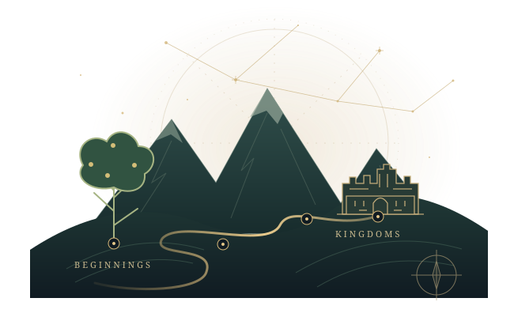

BIBLEBUCKET INTERACTIVE BIBLE TIMELINE
The Bible,
connected.
People become families. Families become kingdoms.
Follow the threads that bring Scripture together.

TAKE THE SCENIC ROUTE
Start with a thread.
Preparing the journeys…
LOOK CLOSER. FOLLOW A CONNECTION.
Your way through the story.
Unfolding the map…
Loading the connected story and its references.
A wide table. A clear source for every story.
Enoch and Jubilees belong in this journey. Open a passage, compare its account, and see where each connection comes from. Early stories follow narrative order; uncertain dates and places stay marked.
Read about the texts, dates, and Ethiopian collection